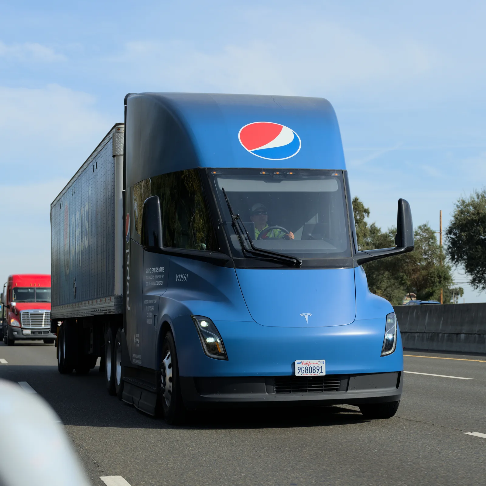
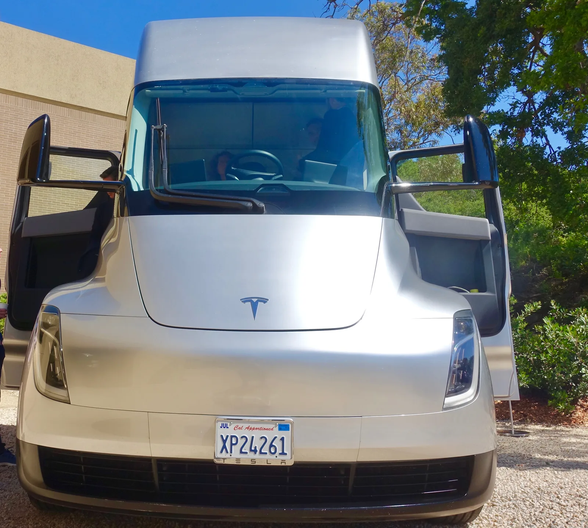
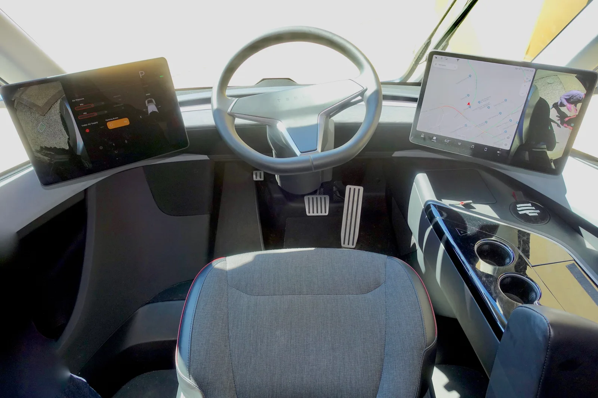

▲ 테슬라가 10월 1일 공개를 앞두고 로드스터의 새 티저를 공개했다. 정작 같은 주 화제를 모은 건 세미 트럭의 양산 인도 시작이었다 ⓒ Wikimedia Commons
티저 영상은 예고편 역할에 충실했다. 답을 주는 대신 질문만 늘렸다.
테슬라가 2세대 로드스터의 새 티저 영상을 공개했다. 모터원(Motor1) 보도에 따르면 이번 영상은 차체 전면을 가로지르는 풀와이드 LED 라이트바가 어둠 속에서 빛나는 장면만 보여줄 뿐, 인테리어 구성이나 배터리 용량, 최종 디자인에 대해서는 아무 정보도 주지 않았다. 그런데 같은 주, 정작 더 큰 화제를 모은 건 따로 있었다. 테슬라가 세미(Semi) 트럭의 양산 인도를 시작했다는 소식이다.
1. 로드스터 티저, 무엇을 보여줬나
이번 티저는 짧고, 정보량도 적다. 모터원에 따르면 영상은 차체 전면을 가로지르는 풀와이드 LED 라이트바가 어둠에 싸인 차체 위에서 희미하게 빛나는 장면에 집중했다. 인테리어 레이아웃이나 배터리 크기, 최종 스타일링에 대한 단서는 전혀 없었다. 공개 일정은 이미 수주 전 확정된 대로 10월 1일(현지시간) 미국 텍사스 웨이코에서 진행된다.

▲ 2017년 최초 공개된 로드스터 프로토타입 측면 모습. 이번 신규 티저는 풀와이드 LED 라이트바 외에 구체적인 디자인 단서를 주지 않았다 ⓒ Wikimedia Commons
현재까지 유일하게 확정된 구체적인 숫자는 예약금이다. 테슬라는 잠시 중단됐던 로드스터 예약을 5만 달러 환불 가능 예약금으로 다시 열었다. 모터원은 이를 두고 "지금 이 차에 대해 확실히 알려진 유일한 수치"라고 짚었다.
로드스터의 실제 양산은 훨씬 뒤의 일이다. 별도 보도에 따르면 테슬라는 로드스터 양산을 텍사스 오스틴 인근 기가팩토리 텍사스에서 2027~2028년 목표로 추진 중이며, 이번 공개 장소인 웨이코 역시 오스틴에서 차로 약 90분 거리에 있다.

▲ 텍사스 오스틴 인근 기가팩토리 텍사스. 로드스터 양산은 이곳에서 2027~2028년을 목표로 추진되고 있다 ⓒ Wikimedia Commons
2. 머스크가 띄운 콜드가스 스러스터, 아직은 "의지 표명"
로드스터를 둘러싼 가장 화제성 있는 소재는 정작 공식 발표가 아니다. 일론 머스크는 그간 공개 석상에서 스페이스X 로켓 기술에서 파생된 콜드가스 스러스터를 로드스터에 탑재하는 구상을 여러 차례 언급해 왔다. 보도에 인용된 바에 따르면 뒷좌석이 있어야 할 자리에 약 10개의 스러스터를 배치해 기류와 무게 이동을 제어함으로써 가속과 코너링을 돕는다는 구상이다.
✅ 확정된 것 vs 아직 루머인 것
· 확정: 10월 1일 텍사스 웨이코 공개 일정, 5만 달러 환불 가능 예약금
· 미확정(머스크의 구상 발언 수준): 콜드가스 스러스터 탑재 여부, 사양, 가격, 출시 시점
모터원은 이를 "확정된 양산 사양이 아니다"라고 못 박았다. 머스크가 지난 1년간 공개 석상에서 이 개념을 여러 차례 언급하긴 했지만, 테슬라는 이와 관련한 스펙이나 가격, 인도 일정을 공식적으로 발표한 적이 없다. 즉 현재로서는 "확정된 계획"이 아니라 "공개적으로 밝힌 포부" 수준으로 받아들여야 한다는 게 모터원의 평가다.
3. 진짜 서프라이즈 — 세미 트럭, 조용히 양산 인도 시작
같은 주, 더 조용하지만 더 무거운 뉴스가 있었다. 로이터 보도를 인용한 모터원에 따르면 테슬라는 2026년 9월 24일이 포함된 주에 세미 트럭을 초기 고객 그룹에게 인도하기 시작했다. 이는 2017년 세미가 처음 공개된 이후 일론 머스크가 줄곧 약속해 온 이정표다.
인도 행사에서 머스크는 세미를 "혁신적(revolutionary)"이라 부르며 "트럭 형태의 스포츠카"라고 표현했다. 그는 이 출시를 미국 디젤 가격이 사상 최고 수준에 이른 상황과 연결지으며, 이 때문에 상용차 운영사(플릿 바이어) 입장에서 세미의 경제성이 성립한다고 설명했다.

▲ 실제 물류 현장에 투입된 테슬라 세미 트럭. 2026년 9월 24일이 포함된 주부터 초기 고객에 대한 인도가 시작됐다 ⓒ Wikimedia Commons (Dllu, CC BY-SA 4.0)

▲ 테슬라 세미의 전면부. 공기저항을 줄이기 위한 캡오버 형태와 대형 윈드실드가 특징이다 ⓒ Wikimedia Commons
4. 세미의 생산 목표와 첫 고객, 그리고 월가의 시선
테슬라는 네바다 공장에서 연간 5만 대 생산이라는 기존 목표를 재확인했다. 이 공장의 규모는 약 167,225㎡(180만 제곱피트)에 달한다. 다만 행사에서 실제 생산 대수나 가격은 공개하지 않았다.
| 항목 | 내용 |
|---|---|
| 인도 시작 | 2026년 9월 24일이 포함된 주, 초기 고객 그룹 대상 |
| 생산 목표 | 네바다 공장(약 167,225㎡)에서 연 5만 대 |
| 실제 생산량·가격 | 행사에서 미공개 |
| 초기 고객사 | 스웨덴 아인라이드(Einride AB), 500대 주문 · 2026년 말까지 75대 인도 예정 |
| 충전 인프라 | 테슬라 메가차저 네트워크 이용 가능 |
| 자율주행 기능 | 테슬라 측 "가까운 미래"에 탑재 예정이라고 언급 |
스웨덴 물류업체 아인라이드(Einride AB)는 세미 500대를 주문했으며, 이 가운데 75대는 2026년 말까지 인도될 예정이다. 이는 테슬라가 실제로 약속한 인도 물량을 지킬 수 있을지 가늠할 수 있는 초기 시험대로 꼽힌다. 세미는 테슬라의 메가차저 네트워크에 접근할 수 있으며, 테슬라 측은 "가까운 미래"에 자율주행 기능도 탑재될 예정이라고 밝혔다.
📍 월가는 세미를 어떻게 보나
모건스탠리 애널리스트 앤드루 퍼코코(Andrew Percoco)는 낙관적 시나리오를 전제로 세미 사업이 테슬라 기업가치에 약 800억 달러를 더할 수 있다고 추정했다. 다만 이는 확정된 수주 실적이 아니라 화물 운송 경제성에 근거한 전망치라는 점에서 유의할 필요가 있다.

▲ 테슬라 세미의 운전석. 중앙 배치형 운전대와 넓은 시야 확보가 특징으로 꼽힌다 ⓒ Wikimedia Commons (Steve Jurvetson, CC BY 2.0)
모터원은 이번 상황을 두고 "티저는 로드스터의 차체보다 테슬라의 우선순위를 더 잘 보여준다"고 평가했다. 실제 매출을 만들어낼 수 있는 화물 운송 수단(세미)을 드디어 출하하기 시작한 반면, 로드스터는 무드 영상과 거액의 예약금으로 여전히 '브랜드 후광' 역할에 머물러 있다는 것이다. 플릿 구매자들은 연비 절감과 가동률로 세미를 평가하는 반면, 스포츠카 팬들은 아직 대부분 약속 단계에 머물러 있는 아이디어에 베팅해야 하는 상황이라고 모터원은 덧붙였다.
5. 요약
테슬라가 2세대 로드스터의 새 티저를 공개했다. 풀와이드 LED 라이트바만 드러났을 뿐 세부 사양은 베일에 싸여 있으며, 공개는 10월 1일 미국 텍사스 웨이코에서 진행된다. 콜드가스 스러스터는 머스크가 공개적으로 언급한 구상일 뿐 아직 확정 사양이 아니다.
같은 주 진짜 화제를 모은 건 세미 트럭이었다. 2026년 9월 24일이 포함된 주부터 초기 고객 인도가 시작됐고, 네바다 공장에서 연 5만 대 생산 목표가 재확인됐다. 스웨덴 아인라이드는 500대를 주문해 올해 말까지 75대를 받는다.
모건스탠리는 낙관적 시나리오에서 세미 사업이 테슬라 기업가치에 약 800억 달러를 더할 수 있다고 추정했다. 로드스터의 공식 스펙과 가격은 10월 1일 공개 이후에나 확인할 수 있을 전망이다.